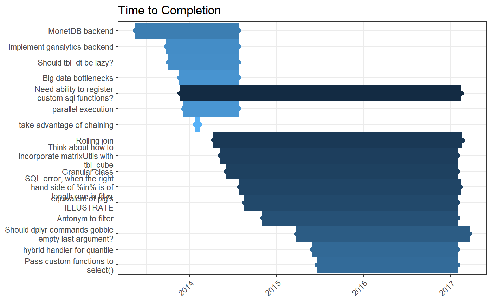
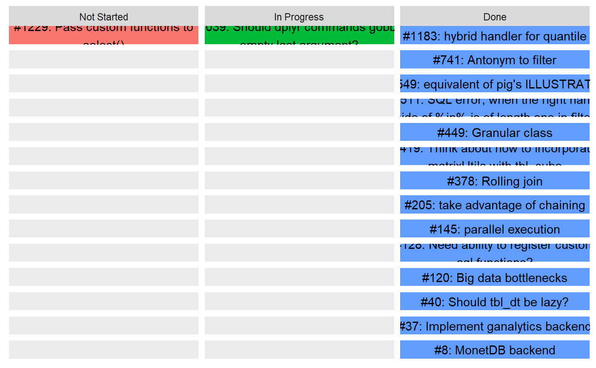
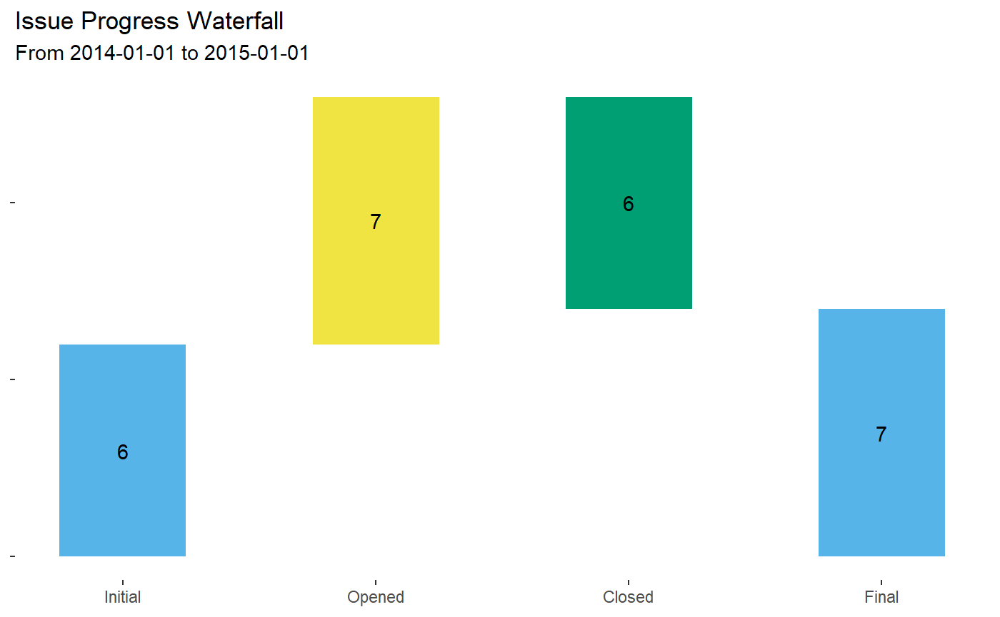

This vignette illustrates codeflows of ghtrackr’s core functionality.
library(ghtrackr)The first step to interacting with a GitHub repository is creating a repository reference. Repository references are “first class citizens” in ghtrackr and contain all authorization credentials. These references are passed as the first argument in all get_ functions.
dplyr <- create_repo_ref('tidyverse', 'dplyr')
#> Requests will authenticate with GITHUB_PATget_ functions retrieve information from the GitHub API. The first argument is the repository reference and additional named query parameters can be passed subsequently. For example, here, we request issues of the first milestone with either an open or closed state. (Note that, in keeping with the GitHub API, only open issues are returned when state is not specified.)
dplyr_issues_list <- get_issues(dplyr, milestone = 1, state = 'all')If you don’t know what parameters are available, the help_<function_name> family provides more information on valid arguments to include in get_ and post_ functions.
help_get_issues()
#> [1] "milestone" "state" "assignee" "creator" "mentioned" "labels"
#> [7] "sort" "direction" "since"More detailed documentation can also be viewed using the browse_docs() function, which launches your browser to the appropriate part of the GitHub API documentation. For example, one might run:
browse_docs(action = 'get', object = 'issue')
#> Open URL https://developer.github.com/v3/issues/#list-issues-for-a-repositoryResults are returned as a list, closely mirror the JSON output from the actual API.
str(dplyr_issues_list[[1]], max.level = 1)
#> List of 23
#> $ url : chr "https://api.github.com/repos/tidyverse/dplyr/issues/1229"
#> $ repository_url : chr "https://api.github.com/repos/tidyverse/dplyr"
#> $ labels_url : chr "https://api.github.com/repos/tidyverse/dplyr/issues/1229/labels{/name}"
#> $ comments_url : chr "https://api.github.com/repos/tidyverse/dplyr/issues/1229/comments"
#> $ events_url : chr "https://api.github.com/repos/tidyverse/dplyr/issues/1229/events"
#> $ html_url : chr "https://github.com/tidyverse/dplyr/issues/1229"
#> $ id : int 89591755
#> $ node_id : chr "MDU6SXNzdWU4OTU5MTc1NQ=="
#> $ number : int 1229
#> $ title : chr "Pass custom functions to select()"
#> $ user :List of 18
#> $ labels :List of 1
#> $ state : chr "closed"
#> $ locked : logi TRUE
#> $ assignee : NULL
#> $ assignees : list()
#> $ milestone :List of 16
#> $ comments : int 1
#> $ created_at : chr "2015-06-19T15:26:31Z"
#> $ updated_at : chr "2018-06-08T13:56:05Z"
#> $ closed_at : chr "2017-02-02T21:10:56Z"
#> $ author_association: chr "NONE"
#> $ body : chr "Right now, you're limited in column selection when using select() and magrittr.\n\nConsider the situation where"| __truncated__It’s likely you may prefer to work with them as dataframes instead. The parse_ family of functions converts “raw” list output from get_ into tibbles.
dplyr_issues <- parse_issues(dplyr_issues_list)
head(dplyr_issues)
#> # A tibble: 6 x 19
#> title body state created_at closed_at user_login n_comments url
#> <chr> <chr> <chr> <date> <date> <chr> <int> <chr>
#> 1 Pass ~ "Right n~ clos~ 2015-06-19 2017-02-02 msjgriffi~ 1 http~
#> 2 "hybr~ "It woul~ clos~ 2015-05-30 2017-02-02 matthieug~ 4 http~
#> 3 Shoul~ "It woul~ clos~ 2015-03-25 2017-03-24 rpruim 7 http~
#> 4 Anton~ "It woul~ clos~ 2014-11-02 2017-02-02 matthieug~ 3 http~
#> 5 equiv~ "pig has~ clos~ 2014-08-18 2017-02-02 jhofman 10 http~
#> 6 SQL e~ "When fi~ clos~ 2014-07-28 2017-02-14 vzemlys 16 http~
#> # ... with 11 more variables: number <int>, milestone_title <chr>,
#> # milestone_id <int>, milestone_number <int>, milestone_state <chr>,
#> # milestone_created_at <date>, milestone_closed_at <date>,
#> # milestone_due_on <date>, assignee_login <chr>, assignees_login <list>,
#> # labels_name <list>There are many different ways to visualize issues.
For reporting on time-to-completion, viz_gantt_closed() creates one horizontal bar per issue and colors issues by length of time open.
viz_gantt_closed(dplyr_issues)
viz_taskboard() creates an Agile-like taskboard of issues open, in progress, and completed.
dplyr_issues$closed_at[1] <- NA
dplyr_issues$closed_at[3] <- NA
dplyr_issues$state[c(1,3)] <- "open"
dplyr_issues$labels_name[[3]] <- c("in-progress", dplyr_issues$labels_name[[3]])
viz_taskboard(dplyr_issues, 40)
#> Warning: Removed 84 rows containing missing values (geom_point).
Either task boards or gantt plots can also be passed through viz_linked to add links to their text back to the relevant GitHub issues. This only works in RMarkdown with the results = "asis" option or saved to a file.
g <- viz_gantt_closed(dplyr_issues)
viz_linked(g)
#> Warning: package 'gdtools' was built under R version 3.4.4viz_waterfall_issues() creates a waterfall plot showing, for a fixed time-period, the initial count of open issues, the number of newly reported issues, the number of closed issues, and the final open count as the end of that time period.
viz_waterfall_issues(dplyr_issues, '2014-01-01', '2015-01-01')
The report_ function family offers an alternative to visualizations. These functions generate HTML for aethetic output in RMarkdown reports. Output is automatically tagged so knitr knows to interpret it as HTML, so it is not necessary to manually add the results = 'asis' chunk option. (Don’t worry if you don’t know what this means. You don’t need to do anything!)
report_progress(dplyr_issues)The post_ function family helps add new objects to a GitHub repo. For example, the following command adds a new issue to a repository. After posting new content, post_ functions return the identification number for the new object.
experigit <- create_repo_ref('emilyriederer', 'experigit')
post_issue(experigit,
title = "Add unit tests for post_issues when title duplicated",
body = "Check that code appropriately warns users when attempting to post a duplicate issue",
labels = c("enhancement", "test"),
assignees = "emilyriederer" )#> [1] 150Natively, the GitHub API allows multiple issues to have the same title. However, you may want to disable this functionality (for example, if a post_ function is in a script that may be re-run.) In this case, the distinct parameter allows you to chose whether or not to allow the posting of new issues with the same title as open existing issues. When distinct = TRUE (as it is by default), the function throws an error and does not post the issue.
post_issue(experigit, title = "Add unit tests for post_issues when title duplicated")#> Error: New issue title is not distinct with current open issues. Please change title or set distinct = FALSE.